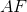
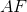

Definirea numerelor naturale-exerciții
Rezolvare:
 ;
;- ;
 ;
; .
.
- Precizați cărui ordin aparține cifra
 din următoarele numere:
din următoarele numere:
 ;
; ;
; ;
; .
.
Rezolvare:
- ordinul sutelor;
- ordinul unităților;
- ordinul sutelor de milioane;
- ordinul zecilor de mii.
-
- Reprezentați pe axa numerelor naturale punctele și de coordonate
 și
și  .
. - Precizați punctele care au coordonatele mai mari decât .
- Precizați câte unități de măsură are segmentul
 .
. - Care este coordonata punctului
 , dacă lungimea segmentului  este
, dacă lungimea segmentului  este  unități de măsură?
unități de măsură?
- Reprezentați pe axa numerelor naturale punctele și de coordonate
Rezolvare:
- Avem:

Punctele care au coordonatele mai mari decât
sunt  și deoarece ,
și deoarece ,  ,
,  și
și  .
.Segmentul
are  unități de măsură: pornind din punctul
unități de măsură: pornind din punctul  , numărăm câte unități de măsură avem până în punctul
, numărăm câte unități de măsură avem până în punctul  .
.Pornind din punctul
, numărăm unități spre dreapta (aceasta fiind lungimea segmentului ): de la la avem  unități; mai numărăm trei unități spre dreapta; va avea coordonata
unități; mai numărăm trei unități spre dreapta; va avea coordonata  .
.

-
- Scrieți toate numerele naturale de două cifre mai mici sau egale cu
 .
. - Ordonați crescător următoarele numere:
 și
și  .
. - Comparați următoarele numere și puneți semnele corespunzătoare:
 și ,
și ,  și
și  ,
,  și
și  , și
, și  ,
,  și
și  .
.
- Scrieți toate numerele naturale de două cifre mai mici sau egale cu
Rezolvare:

- Avem:
.
- Avem:

- Determinați numerele naturale de forma
 știind că suma cifrelor este
știind că suma cifrelor este  .
.
Rezolvare:
Cum  și
și  sunt cifre, acestea pot lua doar valorile sau .
sunt cifre, acestea pot lua doar valorile sau .
Cum este prima cifră a numărului, ea nu poate lua valoarea  .
.
Astfel, avem:

Numerele căutate sunt:  .
.
- Pentru numerele
 ,
,  și
și  scrieți aproximările și rotunjirile până la zeci, sute, mii etc.
scrieți aproximările și rotunjirile până la zeci, sute, mii etc.
Rezolvare:
Aproximarea până la zeci:
- prin lipsă:
 ;
; - prin adaos:
 .
.
Aproximarea până la sute:
- prin lipsă: ;
- prin adaos: .
Aproximarea până la mii:
- prin lipsă:
 ;
; - prin adaos:
 .
.
Aproximarea până la zeci de mii:
- prin lipsă:
 ;
; - prin adaos:
 .
.
Aproximarea până la sute de mii:
- prin lipsă: ;
- prin adaos:
 .
.
Aproximarea până la milioane:
- prin lipsă:
 ;
; - prin adaos:
 .
.
Rotunjiri:
- până la zeci:
 ;
; - până la sute: ;
- până la mii: ;
- până la zeci de mii: ;
- până la sute de mii: .
- până la milioane: .